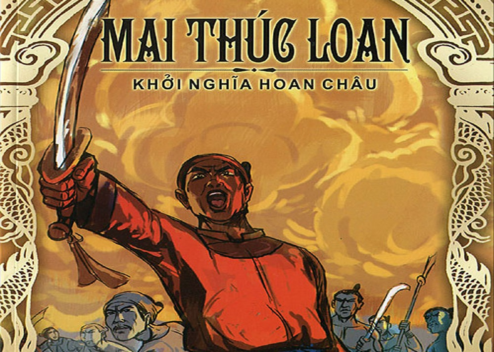

Nhà vua họ Mai, tên Thúc Loan, người đất Hoan Châu, Nhật Nam vậy. Cha là Mai Sinh, mẹ là Vương thị, đều là người hiền đức. Khi sinh ra nhà vua, mẹ nằm mộng thấy một người thiếu phụ, mình mặc áo đỏ, tự xưng là Xích Y sứ giả, tay cầm một viên ngọc “kê sơn bích”, nói rằng:
- Cho bà vật này, nên dùng làm vật báu.
Vương thị xem viên ngọc ấy thì thấy giống quả trứng gà, nhưng to hơn, năm sắc óng ánh lóe cả mắt, giơ tay đón lấy, bỗng nhiên cầm hụt, rơi xuống đất vỡ tan, nhân đó giật mình tỉnh dậy. Đến khi sinh ra thì ở đùi bên trái có vết xanh đen, giống như một đồng tiền. Mẹ Đại vương đem chuyện trong mộng nói với cha. Cha lấy làm lạ, bèn giải thích rằng ngọc bích nhận ở tay hốt nhiên rơi xuống đất vỡ tan, bắn tung tóe, có tiếng kêu vang vang, đó là cái ý tiếng tăm vang dậy, chấn động người đời. Còn gà (kê) thì là đứng đầu loại có cánh, lại thêm năm sắc lóe mắt, dùng để làm vật báu có cái điềm lành của con tinh điểu mang năm đức tốt. Bèn đặt tên là Phượng, tự là Thúc Loan, đó là để ghi lại cái điểm được thấy trong giấc mộng vậy.

Năm lên mười, thì mẹ đi hái củi bị hổ giết hại, chẳng bao lâu cha cũng mất.
Bạn của cha là Đinh Thế thấy vậy thương tình, đem về nhà nuôi, coi như con đẻ. Đến khi lớn lên tự nhiên có chí lớn, đầu hổ, mắt rồng, tay vượn, dũng cảm, đa tài, vượt ra ngoài sự tưởng tượng của người ta. Đinh Thế yêu mến quý trọng đem con gái là Tô Ngọc gả cho. Tô Ngọc hiền mà đa trí, giỏi việc cửa nhà, lại càng giỏi việc nông tang, cho nên gia sản ngày một nhiều, môn hạ ngày một đông, trước sinh hai trai, sau sinh hai gái. Con trưởng là Báo Sơn, con thứ là Kỳ Sơn, đều có trang mạo kỳ vĩ, đến khi lớn lên, văn mô vũ toán, không gì là không đầy đủ. Mai Đế mừng vì trong nhà có điềm vui, việc trong việc ngoài không có gì là không quan tâm. Một hôm bảo phu nhân rằng:
- Kẻ nam nhi sinh không hợp thời, gặp nhiều vận bĩ, ngày tháng trôi qua, nhanh chóng như bánh xe, thật là đáng tiếc vậy. Nay ta vốn có chí bình định thiên hạ, đi khắp hải nội để giao kết với hào kiệt bốn phương, cùng lập sự nghiệp. Nàng ở nhà nuôi giữ con ta, lại chăm việc nông tang, tích trữ lương thảo để chờ lúc lâm thời dùng đến, mọi việc đều ổn thỏa, đừng phụ lòng ta, thực là may mắn lắm. Người xưa nói: “Nhà nghèo trông vào vợ hiền, nước loạn trông vào tướng giỏi”. Nàng tuy chưa bằng người xưa, tuy nhiên chăm sóc việc nhà thì hình như trong nghìn vạn người mới có chục người, trăm người như vậy. Cho nên ta mới trịnh trọng gửi gấm, nàng nên suy nghĩ đi.
Phu nhân nói:
- Chàng đã căn dặn, thiếp xin vâng lời dạy bảo. Nhưng chàng nên có chí cung tên, có hùng khí kinh doanh bốn cõi, khiến cho trăm họ được sống những ngày tháng Nghiêu Thuấn, đất nước Nam được gặp cái cảnh hải yến hà thanh. Đó thực là điều thiếp mong mỏi vậy.
Mai Đế mừng lắm, tạ lòng mà nói:
- Nếu được nàng gắng sức, ta còn lo chi nữa.
Thế là yên tâm giang hồ, đi tìm những kẻ dật sĩ. Gặp được Phòng Hậu, Thôi Thặng ở đất Hoa Dương, nói chuyện với nhau suốt ngày, hình như là có duyên cá nước. Sau có một người họ Phục, tên Trường Thủ, không hẹn mà đến. Lại có người họ Đàn, tên Du Vân và bạn là Mao Hoành, Tùng Thụ, Tiết Anh, Hoắc Đan, Khổng Qua, Cam Hề, Sĩ Lâm, Bộ Tân là những khách đeo kiếm, nghe tiếng tăm hâm mộ sự tín nghĩa mà đến. Thực khách trong nhà thường có đến mấy nghìn người.
Một hôm, Phòng Hậu và Thôi Thặng bàn riêng rằng:
- Nước Việt ta từ khi nội thuộc đến nay, bọn quan Thú mục phương Bắc không ai bảo mà cứ sang. Hai chúng ta ẩn náu lâu ngày ở chôn khe động, như giao long ở trong ao, gặp được hội phong vân, nên mở cánh xòe vuốt. Nay xét Mai quân đi như rồng, bước như hổ, có tài dẹp loạn giúp dân. Nếu không nhân lúc này mở cánh giương vây, thì còn đợi lúc nào nữa.
Thế là bèn gặp Mai Đế xin cất quân. Mai Đế giả vờ làm như có vẻ khó khăn. Phục Trường Thủ nói:
- Người Đường nghênh ngang tung hoành, ngày càng quá lắm, thuế má nhiều, hình phạt nặng, người dân không sống nổi. Ngày xưa vua Thang, vua Vũ nhân gặp thời mà hành động, đời sau gọi là thánh, là hiền. Xin nghĩ kỹ xem, không nên ngần ngại.
Nhà vua nói:
- Ta vốn cũng muốn như thế, nhưng chỉ lo binh lương không đủ, tả hữu ít người giúp đỡ!
Đàn Vân Du nói:
- Nhà Đường có nội loạn: đàn bà trong cung tung hoành, Lý Long Cơ tự tiện nắm quyền, dựa vào mụ vợ bé của nhà vua định cái kế ác tày đình. Đảng Tam Tư chưa quét sạch mà sự hung bạo của Hà Tuấn lại càng quá tệ. Thời ấy, thế ấy, sao lại có thể giữ mãi như vậy. Nếu biển động sóng kình, thì bọn chúng sẽ như ngói tan.
Thế là Mao Hoành, Tùng Thụ phấn nhiên nói rằng:
- Về việc này, chúa thượng còn hồ nghi chưa quyết đoán. Nếu muốn kết liên ngoại viện thì hai nước phiên bang Lâm Ấp, Chân Lạp có thể trưng binh được.
Tiết Anh, Hoắc Đan đồng thanh bước ra nói:
- Tôi xin đi sứ, khiến cho hai nước đem quân ứng viện, vạn vô nhất thất.
Khổng Qua, Cam Hề, Sĩ Lâm, Bộ Tân đều kế tiếp bước lên mà nói:
- Tôi xin sớm dựng cờ nghĩa, chiêu binh ứng mộ. Việc cần làm ngay, không nên chậm trễ.
Nhà vua thấy lòng mọi người hoàn toàn hợp nhau, bèn mở tiệc lớn, đem gia tài để cung phụng tân khách.
Thế là chiêu binh mãi mã, dựng lũy xây thành. Trong một tuần, xa gần hướng ứng, có quân hơn mười vạn. Dùng Phòng Hậu làm Quân sư, Thôi Thặng làm Thái úy, Phục Trường Thủ làm Tham mưu, Đàn Vân Du làm Tán nghị, Mao Hoành làm Thái trung đại phu, Tùng Phụ làm Trị trung nội sử, Khổng Qua làm Thảo lỗ tướng quân, Cam Hề làm Định biên hiệu úy, Sĩ Lâm làm Hộ quân, Bộ Tân làm Lang tướng. Lại chia binh làm bốn đạo, mỗi đạo chia làm ba quân, mỗi quân một nghìn người do một Trung úy suất lĩnh, để nghe hiệu lệnh. Lại sai Tiết Công làm Lâm Ấp Thông vấn sứ, Hoắc Đan làm Chân Lạp Cáo dụ sứ. Mọi việc trong ngoài đâu vào đấy cả, thanh thế quân đội đại chấn. Bọn quan Thú Mục nhà Đường, trông ngọn gió mà chạy toán loạn. Nhà vua bèn đem quân chiếm Châu Thành, chia quân đóng giữ. Quân thần đến mừng, đều xin lên ngôi báu. Nhà vua bèn lên ngôi Hoàng đế ở phía nam Hương Lãm, tự cho mình thuộc về đức thủy [1], xưng là Hắc Đế. Đó là năm Quý Sửu (713) mùa hạ, tháng Tư, vào thời Đường Huyền Tông, niên hiệu Khai Nguyên thứ nhất vậy. Do đó, chốn hải nội được đại định. Viên Thứ sử là Tào Chân Tĩnh lui về giữ Quế Sơn. Năm sau, năm Giáp Dần (714), bọn Tiết Anh, Hoắc Đan phụng chỉ đi tuyên dụ hai nước Phiên. Hai nước Phiên lâu nay bị khổ nhục vì người Đường, đến nay thấy nhà vua cáo dụ, đều nghe theo mệnh. Vua Lâm Ấp là Phạm Hồ Dĩnh sai tướng là Chư Hương An đem quân mười vạn, vua Chân Lạp là Hề A Khiêm sai tướng là Tham Ninh Na đem quân mười vạn đến hội hợp.
Nhà vua vì có người phương xa đến triều đình cho nên uy danh ngày càng sáng tỏ. Người Đường kẻ nào kẻ nấy dần dần tự bỏ trốn về. Nhà vua bèn định Kinh đô, lập phủ đệ, nay là ở địa đầu đất Hương Lãm, mở rộng cung điện để ở. Có hùng binh hơn ba chục vạn.
Từ đó trở đi, nước giàu dân mạnh, các dân Man Di ở xa gần đều đến triều cống. Đến năm Nhâm Thìn (752), việc nổi loạn trong nhà Đường đã dẹp xong. Vua Đường nghe tin nhà vua chống lại mệnh lệnh, bèn sai quan Thị nội Dương Tử Húc làm chức Tả giám môn Vệ tướng quân. Nguyên Sở Khánh làm Đô hộ phủ, đốc suất bảy mươi nhăm dinh quân thủy bộ, người ngựa hơn ba chục vạn, hai đường thủy lục cùng tiến, xâm phạm vào thành Long Biên. Quan, tướng của nhà vua thua trận, quân sĩ chết không kể xiết. Người Đường thừa thắng kéo thẳng đến, vây bức phủ thành. Nhà vua bị hãm trận mà chết. Quốc thống lại dứt. Bề tôi văn vũ phần lớn bị người Đường giết hại. Người Lâm Ấp, người Chân Lạp cũng bị người Đường giết, thấy thua quân, họ cũng thu quân chạy về phương Nam. Nhà vua dấy binh năm Quý Sửu, chết năm Nhâm Dần, ở ngôi báu mười năm rồi chết.
Người đời sau nhớ công đức, bèn xây miếu ở chỗ cung điện xưa mà thờ, đến nay còn làm phúc thần. Năm Trùng Hưng thứ nhất (1285), tôn phong là Anh Vũ thần dũng Hoàng đế. Năm Trùng Hưng thứ tư (1288), lại gia tôn bốn chữ “Vĩ tích uy liệt”. Năm Hưng Long thứ 21 (1313), lại gia tôn sáu chữ “Minh mẫn, thần vũ, minh đức” vì có công âm phù vậy.
Chú thích:
[1] Tinh chất của nước, tượng trưng bằng màu đen. Do đó xưng là Hắc Đế (vua đen).